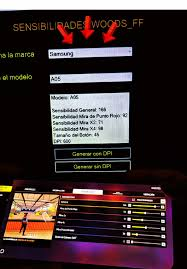

System Woods
Generador de Configuraciones Sensitivas para Free Fire.
System Woods FF
Características Principales
Características principales de System Woods FF
- Ajuste de sensibilidad personalizado: Mejora la precisión según el modelo del dispositivo.
- Optimización de rendimiento: Reduce el lag y mejora la estabilidad.
- Interfaz sencilla y rápida: Diseño minimalista.
- Compatibilidad: Funciona en una amplia variedad de modelos.
- Soporte técnico: Asistencia en caso de dudas.

Más sobre System Woods FF
System Woods FF es una aplicación para optimizar la experiencia en Free Fire. Permite ajustar sensibilidad, gráficos y rendimiento para mejorar la jugabilidad, especialmente en Android.